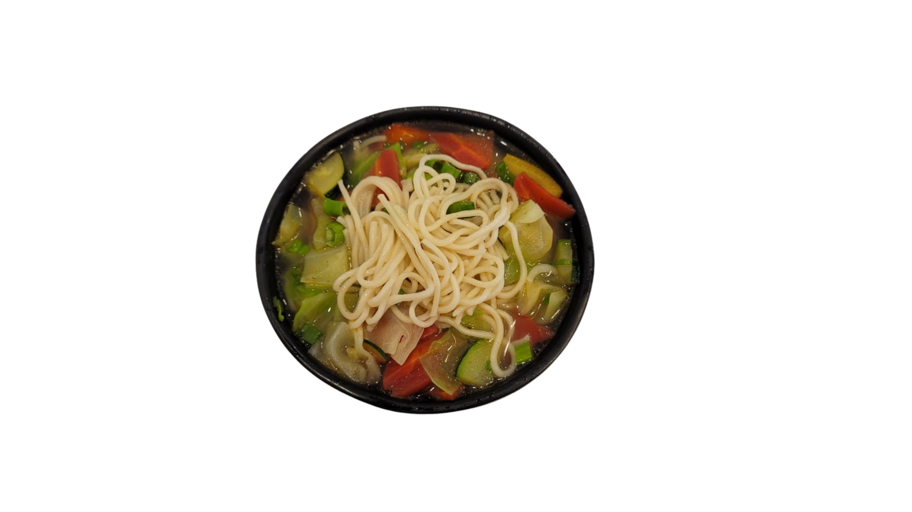
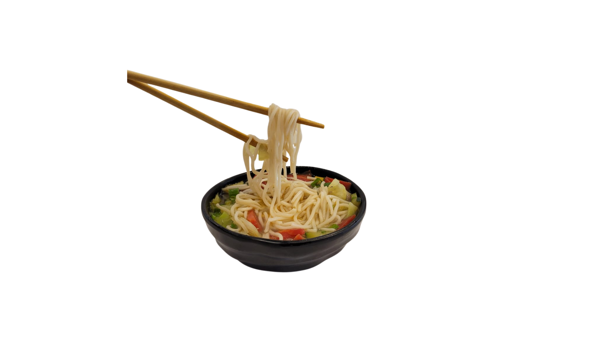

i love
cooking
food
thukpa


one pot
noodle soup
Some evenings, I just follow the process Fresh veggies hit the pot, the
colors and aromas come alive. Noodles go in last soft, springy, ready to
soak up all that flavor. By the first spoonful, the whole day feels
lighter.
Some days they’re bold and springy, other days spicy and overcooked.
Either way, the process is the fun part. or either something else, but
yes, when it comes to making I’ll always happily make another bowl
tomorrow:))